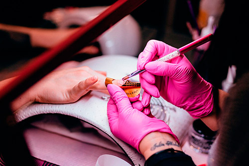
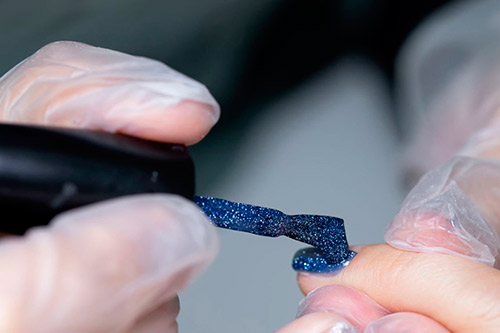

uñas acrílicas
Las uñas acrílicas se realizan con un polvo acrílico, sobre tu uña natural. El polvo acrílico denominado polímero se seca cuando entra en contacto con un líquido llamado monómero. Por ese motivo, este tipo de técnica no requiere lampara de secado. Son muy resistentes y evitan el resquebrajamiento de las uñas, por lo que es una técnica muy aconsejada para uñas más blandas y con tendencia a resquebrajarse. Con esta técnica podrás obtener el largo y forma de la uña que desees. Se pueden alargar con tips o con moldes y la duración de esta manicura es de 2 a 4 semanas.
uñas de gel
Las uñas de gel se realizan con Gel UV, un producto que te permitirá o bien alargar tu uña (mediante tips o moldes) o simplemente reforzar tu uña natural. Está técnica sí necesita una lámpara UV para el secado de la manicura, se pueden aplicar varias capas de Gel UV en función al grosor que desees. Con esta técnica también podrás conseguir el largo y la forma de la uña que desees. Para la realización de esta técnica primero se tendrá que aplicar una fina capa de Primer Ultra Bond, un líquido que desinfecta y prepara tu uña para el siguiente paso, que es aplicar el Builder Clear Gel, que es el gel constructor. La duración de esta técnica de manicura es de 2 a 4 semanas.
uñas de fibra de vidrio
Esta nueva técnica de manicura se ha puesto de moda estos últimos años debido a que su resistencia es mayor a cualquiera de las demás técnicas. Esta técnica es muy utilizada para la preparación de uñas débiles que se encuentran muy desgastadas. Se realiza con hilos de fibra de vidrio, primero tendrás que aplicar el pegamento sobre tu uña natural, seguidamente se adhieren los hilos de fibra de vidrio y despúes con unas tijeras de cigüeña se recortan los hilos hasta el largo deseado, finalmente se liman para darle la forma que más te guste. El último paso sería aplicar una resina que fije las fibras de vidrio y el secado con la lámpara UV. Estos pasos se tendrán que repetir de dos a tres veces hasta conseguir el grosor deseado. La duración de esta técnica puede llegar a ser de uno a seis meses, siempre retocándolas cuando tu uña empiece a crecer.
esmaltado semi-permanente
Esta es la técnica es la menos nociva para tu uña, ya que es el tipo de esmaltado más parecido al normal, pero te puede durar de 15 a 20 días sin necesidad de preocuparte por que se te descascarillen o se rayen. Esta técnica no permite el alargado de tus uñas ya que simplemente lo que se aplica son esmaltes que con ayuda de la lámpara UV hace que sea un esmaltado permanente. Primero se aplicará una capa de base (Base Coat), seguidamente el color deseado y para terminar se aplica el Top Coat que fijará y hará permanente el esmalte. Entre cada uno de estos pasos, tendrás que introducir las uñas en la lámpara UV.
